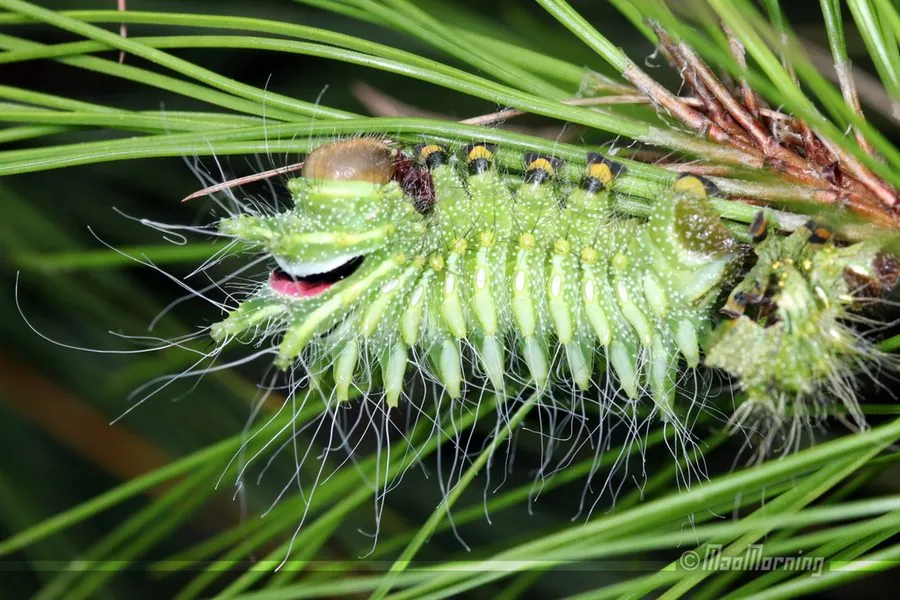

昆虫 · 动物界
长尾大蚕蛾 Actias dubernardi

翅面淡绿、后翅拖出长长尾突的大型蚕蛾，雄蛾体色粉红、雌蛾淡绿，是中国南方山地森林中最优雅的蛾类之一。
- 分类
- 门节肢动物门纲昆虫纲目鳞翅目科大蚕蛾科属尾大蚕蛾属
- 栖息环境
- 中国南方的山地阔叶林，幼虫取食枫杨和核桃叶片
- 地理分布
- 中国四川、云南、贵州、湖北等南方山地
- 保护级别
- 暂无评估
物种志
长尾大蚕蛾雄蛾翅展约 90–110 mm，雌蛾略大。雄蛾体色粉红至紫红色，前翅前缘暗紫，后翅拖出两条长长的尾突，可长达 4–5 cm；雌蛾体色淡绿，尾突同样修长。翅中央各有一个眼形斑，触角呈羽状。
长尾大蚕蛾分布于中国南方的山地森林，包括四川、云南、贵州和湖北等地，是中国的特有种之一。成虫多在春季至初夏羽化，夜间活动，有趋光性，常被灯光吸引。成虫的口器退化，不能取食，寿命只有数天到一周，全部能量都用于繁殖。幼虫取食枫杨、核桃等植物的叶片。长尾大蚕蛾因尾突修长、体色优雅而成为蛾类收藏和生态摄影的热门对象。目前它没有IUCN 的正式评估，森林砍伐和人为捕捉是其面临的主要威胁。
形态与习性
- 食性成虫不取食，幼虫取食枫杨和核桃叶片
- 翅展90–110 mm，尾突长 4–5 cm
- 雌雄差异雄蛾粉红色，雌蛾淡绿色
- 寿命成虫仅数天至一周
- 习性夜间活动，有趋光性
- 威胁森林砍伐和人为捕捉
趣味知识
- 长尾大蚕蛾的尾突比很多蛾类的整个身体还长。
- 雄蛾是粉红色的，雌蛾却是淡绿色的，很容易被误认成两种蛾。
- 成虫口器退化，羽化后不再进食，只活几天就完成繁殖。